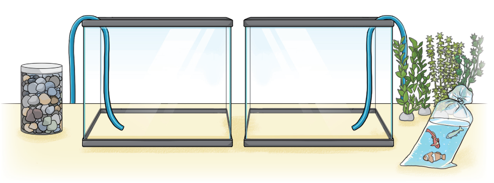

실과 시간에 크기가 같은 2개의 어항을 꾸미려고 합니다. 왼쪽 어항에는 어항의
1
3
만큼, 오른쪽 어항에는 어항의
2
6
만큼 물을 채우려고 합니다.
물의 양을 비교해 봅시다.
그림 보기
물음 1
물음 2
물음 3
두 어항에 채울 물의 양을 어떻게 비교하면 좋을지 이야기해 보세요.
어항의 크기가 같으므로 어항의
1
3
과
2
6
만큼 물을 채워서 크기를 비교해보면 될 것 같습니다.
두 어항에 채울 물의 양만큼 색칠해 보세요.
1
3
2
6
1
3
과
2
6
의 크기를 비교해 보세요.
두 분수의 크기는 같습니다
